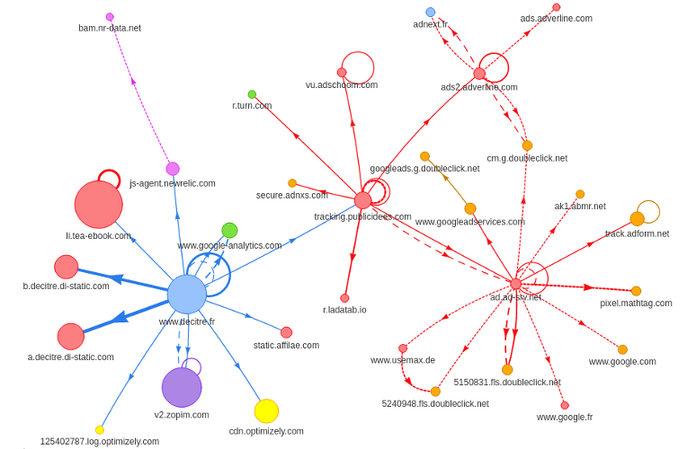

La performance Web sur decitre.fr
Decitre.fr
L'équipe
- 3 développeurs + 1 responsable technique
- une dizaine de personnes hors technique
Decitre.fr
Le site
- 4,2 millions de pages vues par mois
- 1,3 million de produits
Qu'est-ce que la performance web ?
Qu'est-ce que la performance web ?
Afficher au plus vite son site Internet
L'importance de la performance web
- Causalité entre performance technique et performance business
- Walmart : -1s ⇒ +2% sur le taux de conversion
- Google : +400ms ⇒ -0.6% sur le nombre de recherches
- Impact sur le nombre de pages vues, les taux de rebond, conversion
Qu’est-ce que le Web ?
Qu’est-ce que le Web ?

Optimiser l'infra
Mesurer les performances
New Relic
Mesurer les performances
Blackfire
Migrer vers PHP 7
- En cours de déploiement
- Réduction du temps de traitement entre 35% et 40%
L'importance du réseau
L'importance du réseau
Impact de la bande passante Source : High Performance Browser NetworkingL'importance du réseau
Impact de la latence Source : High Performance Browser NetworkingAnatomie d’un hit HTTP
Anatomie d’un hit HTTP
WebPageTest.org
Faire moins de requêtes
Supprimer les images inutiles
Utiliser des sprites
- Concaténation d'images en une seule
- 1 seul hit HTTP
Utiliser des font d'icônes
- 1 fichier (100 icônes) VS plusieurs sprites
- Poids faible : 16 Ko
Utiliser les Data URI
Avant :
.remise {
background-image: url('vignette_remise.png');
}
Après :
.remise {
background-image: url('data:image/png;base64,iVBORw0KGgoAAAANSUhEU....');
}
Exemple concret avec le footer
Exemple concret avec le footer
Exemple concret avec le footer

25% de requêtes en moins
Gérer le cache
- Cache HTTP
- Durée de validité configurable
Garder les connexions ouvertes
- Utiliser le Keep-Alive
- Configurer la durée d'ouverture
- Attention à ne pas saturer les serveurs
Slow Start TCP

Concaténer les assets
- Regrouper les fichiers JS et les fichiers CSS
Lazy-loader les images
Lazy-loader les images
25% de requêtes et code téléchargé en moins
-12% sur le temps de chargement
Alléger les ressources
Compresser le contenu
- Activer la compression gzip
- Diminution de la bande passante
- Facteur 5 de compression
Minifier les assets
- Suppression des caractères inutiles, simplification du code
- Pas en place chez nous (pour le moment)
Utiliser des domaines cookieless
- Alléger les requêtes HTTP
- Création d'un domaine sans cookie pour livrer les images
Optimiser les images
- Sensibiliser sur les risques
- Intégrer un outil pour optimiser
- Nettoyage de nos images avec tinypng.com
Nettoyer le code mort
- 15% de CSS morte
Réduire les contenus bloquants
Rendre l'exécution du javascript non bloquante
- Descendre les fichiers
- Charger en async
Auditer les scripts externes
 http://requestmap.webperf.tools/Auditer les scripts externes
- Auditez les scripts
- Améliorez leur qualité
Paralléliser les chargements des images
- Augmenter la capacité à paralléliser
- Attention aux coûts du sharding
Et ensuite ?
HTTP/2
- Multiplexage des requêtes
- Compression des headers
- Content pushing
Autres pistes
Travailler sur le chemin critique du rendu navigateur
Pour aller plus loin
Impliquez vos équipes
- Intégrez la web performance dans votre culture d'équipe
- Créez vos process
- Mesurez
- Vendez votre travail